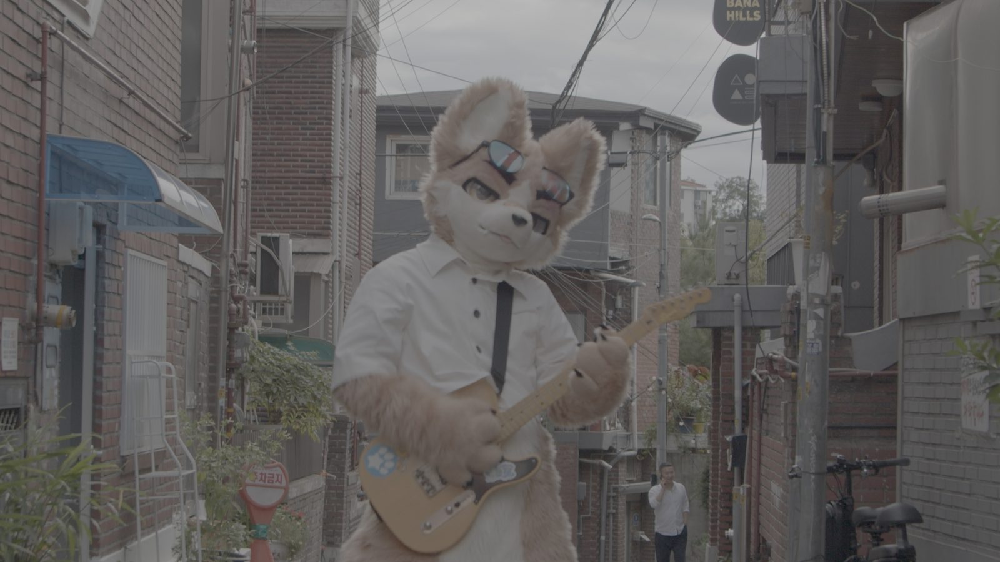
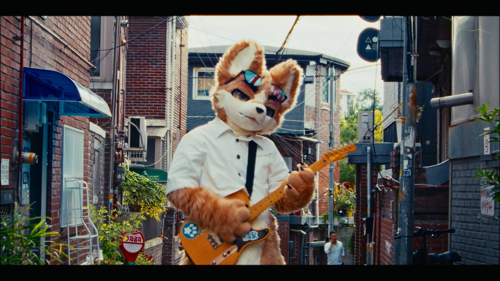
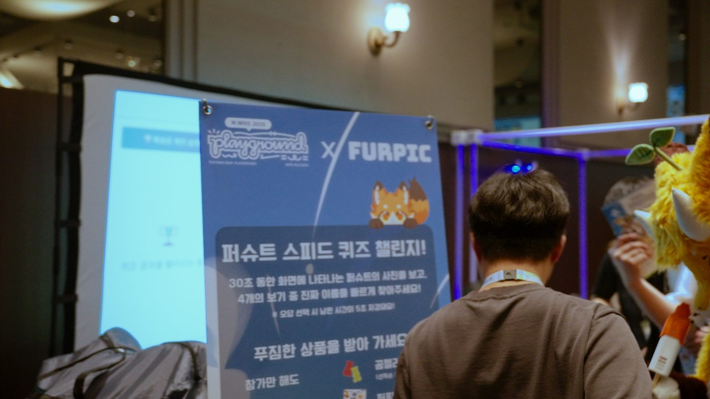
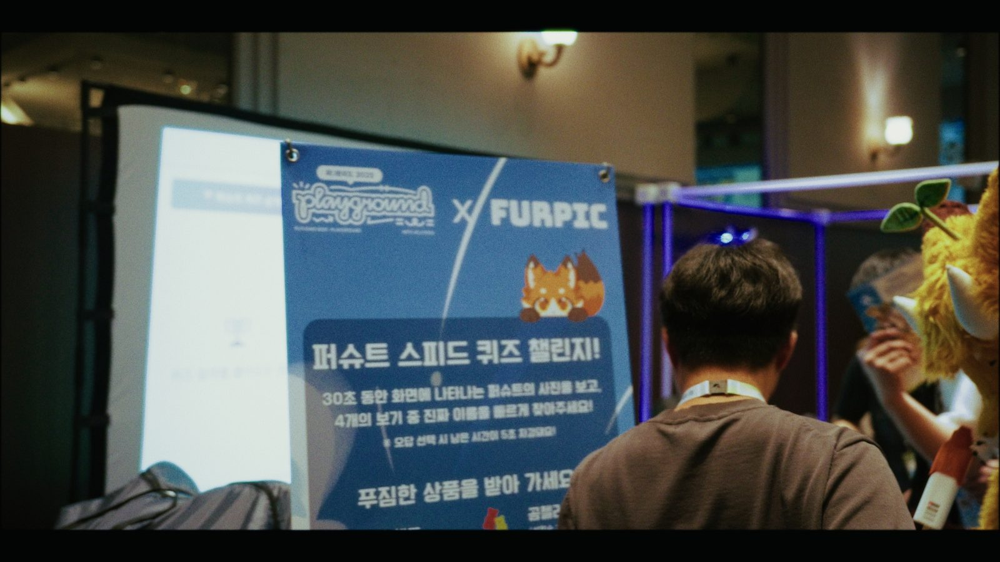
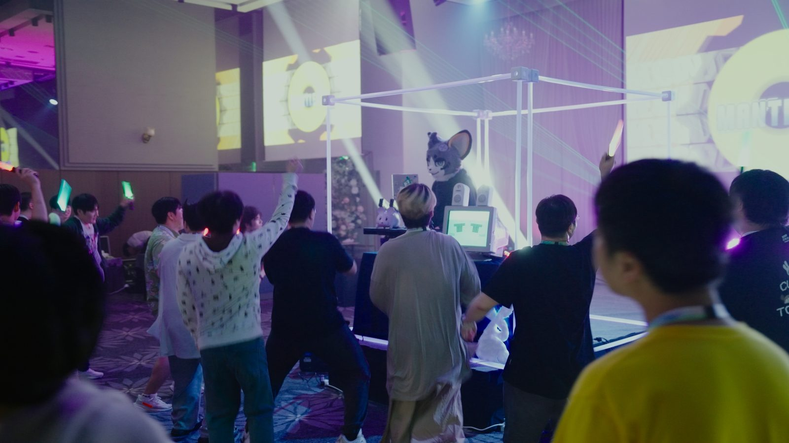
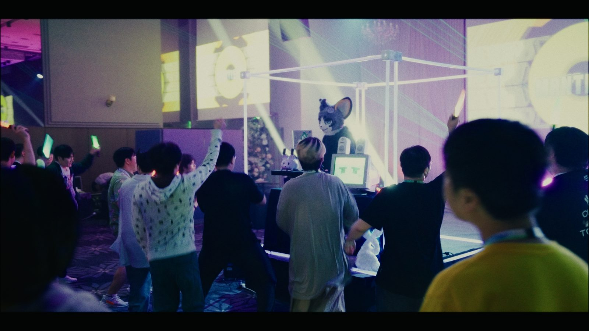
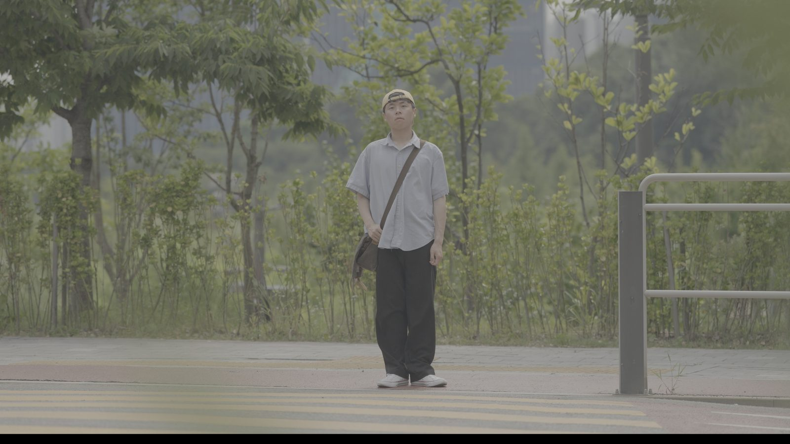
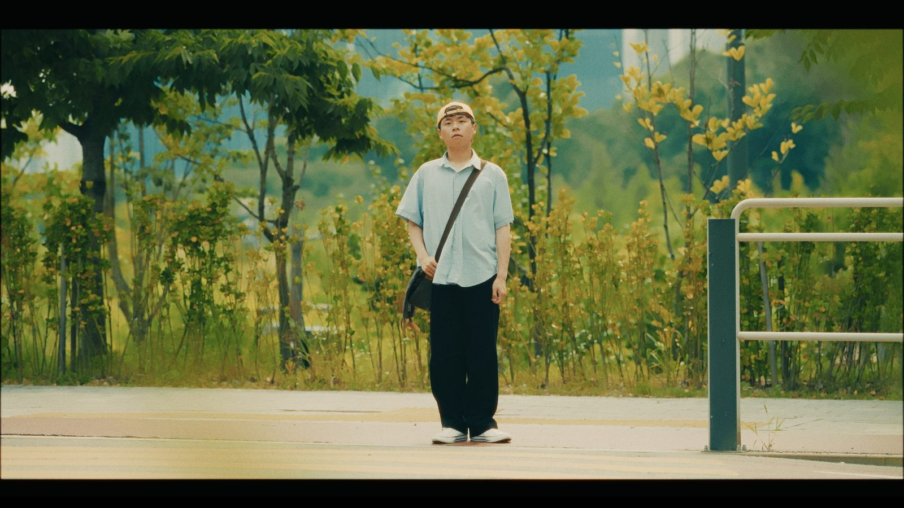

촬영 · 컬러 그레이딩 · 조명
빨리 소비되는 영상보다오래 남는 영상을 만듭니다.
영화 현장 조명부에서 시작해, 지금은 행사와 라이브 무대를 촬영하고 컬러 그레이딩까지 맡고 있습니다.
함께한 곳
- 성균관대학교공식 유튜브 채널
- POCLANOS뮤직비디오
- Noisy Neighborhood부산국제록페스티벌 라이브 클립
- FUR:RAID800명 규모 컨벤션 미디어팀
- 총학생회 SURE축제 · 홍보 영상
- 성균관대 청랑고하노라 행사 기록
왜 공방인가
한 컷씩,
손으로 다듬습니다.
AI가 영상을 만들고 숏폼이 하루에 수천 개씩 쏟아지는 시대입니다. 그럴수록 사람이 직접 보고 고른 장면, 손으로 맞춘 색이 차이를 만든다고 믿습니다.
공방이라는 이름은 그 약속입니다. 행사를 기록하는 일도 영화를 찍는 마음으로 대하고 마음에 들 때까지 한 컷을 다시 봅니다.
주황색 영상공방 · 황태건
작업물
행사와 무대를 끝까지 책임진 영상들
보정
카메라가 놓친 색을,
원래 색으로 되돌립니다.
캐릭터의 설정색이든 사람의 얼굴색이든, 촬영 순간 눌리고 틀어진 색을 한 컷씩 원래대로 되찾습니다.


보정 전보정 후빛은 고를 수 없어도, 얼굴색은 지킬 수 있습니다.
형광등과 무대 LED, 해질녘 빛이 한 화면에 섞이면 가장 먼저 무너지는 건 사람의 얼굴입니다.


보정 전보정 후

보정 전보정 후

보정 전보정 후보정 과정
한 컷이 완성되는 다섯 단계
실내 행사 현장의 한 컷이 원본에서 납품본이 되기까지의 순서입니다.
함께 만들기
찍어야 할 순간이 있다면
날짜와 장소만 알려주세요.
서비스와 진행 방식, 장비는 의뢰 안내 페이지에 정리해 두었습니다.